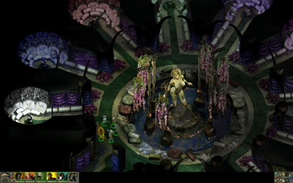
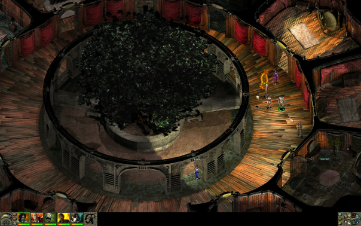

G3 Infinity Engine widescreen mod
2011-03-27 02:20:54
status: inherit
author: Bryan
This is in 1920x1200.

Images speak louder than words here, I'd say.

The lack of a text and menu UI mod to match a resolution this high was somewhat unfortunate but didn't hinder the experience so much. Baldur's Gate, Icewind Dale, next...
Comments: